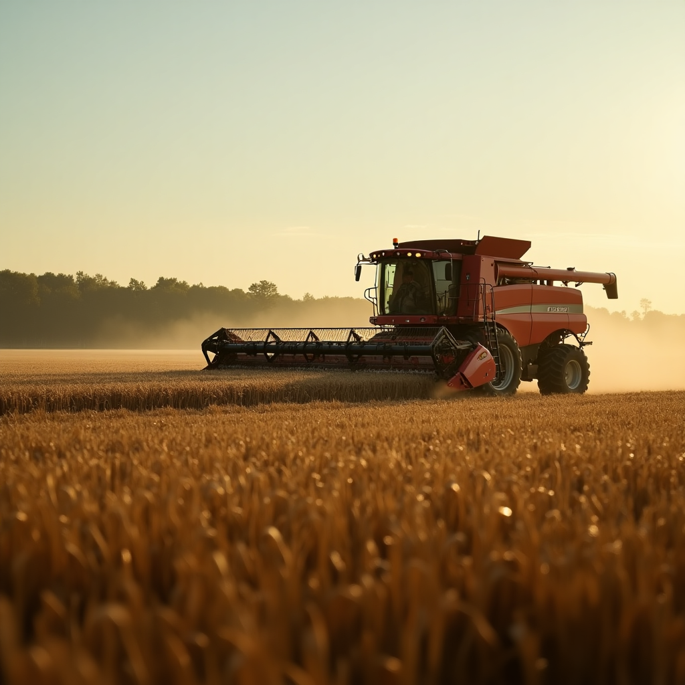
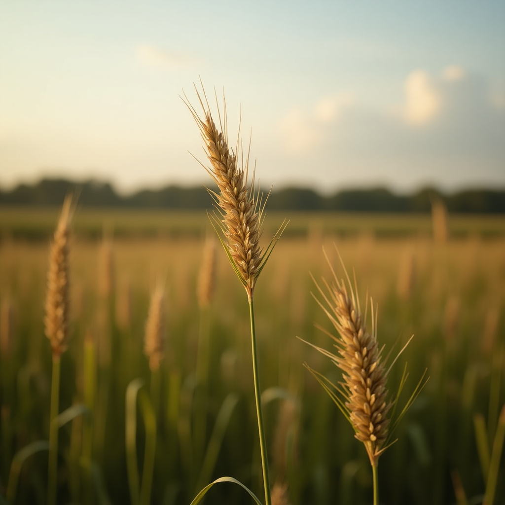

Empowering Farmers with Data-Driven Solutions
Our mission is to help people see data in new ways, discover insights, and unlock endless possibilities in agriculture.
Our Vision
The future isn’t humans versus machines—it’s humans plus machines producing augmented intelligence. E-Agronomist combines cutting-edge technology with agricultural expertise to empower farmers. We provide tools for precision farming, leveraging aerial data, weather insights, and irrigation systems to boost yields and sustainability. Our goal is to make farming smarter, not harder, ensuring a greener future for all.
Images

Image one
text
Image Two
text

Image Three
text